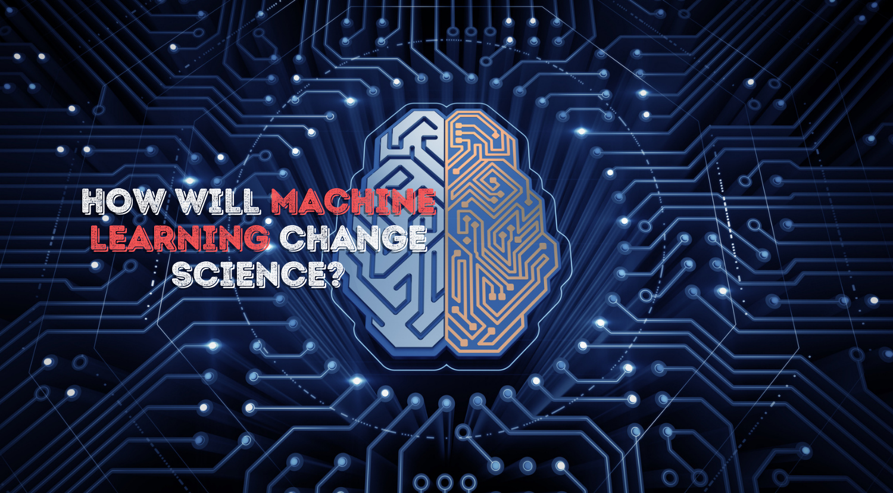

HOW WILL MACHINE LEARNING CHANGE SCIENCE?
Machine learning has burst onto the scene in the past two decades and will be a defining technology of the future. It is transforming large sectors of society,including healthcare, education, transport, and food and industrial production, as well as having an enormous impact on science and research. A subset of artificialintelligence, machine learning is a process that helps computers to learn without direct instruction, and from experience. It does this by using algorithms to identifypatterns within data, which are then used to create models that can make predictions. And data is the key. Machine learning, and the spiraling availability of vast amounts of data, promises to revolutionize the production of knowledge. Indeed, today's exponential andvirtuous cycle of growth in deep learning, among other technologies, has been compared to the Cambrian Explosion of half a billion years ago when life on Earthexperienced a short period of very rapid diversification. Professor James Larus, Dean of EPFL's School of Computer and Communications Sciences (IC), agrees that machine learning and AI will have a profound impacton how we live and we have yet to see anywhere near its full potential. "To me, machine learning is a very powerful tool that is still very much in its infancy and it is still somewhat of a 'dark art'. We teach classes in machine learning,the underlying math behind it and are able to give students examples as to how it has been applied in the past, but we can't give them principles because we literallydon't even know why it works as well as it does." EPFL's Lenka Zdeborová is working on this fundamental question. Associate Professor ofPhysics, Computer Science and Communication Systems in the StatisticalPhysics of Computation Laboratory—part of the School of Basic Sciences (BS) and IC—she is passionate about advancing the theory of what is computable andwhat's possible with machine learning and artificial intelligence. "In sciences we want to understand the objects we study better, the objective is not fixed. We need to come up with the objective so that the machine learning systemis useful in the scientific endeavor and look at the role that machine learning is playing in changing the very scientific method. It's a fascinating field that hasemerged as machine learning has become very successful in the past decade." With colleagues from physics, chemistry, engineering and life sciences, Zdeborová has just launched a new doctoral course lecture series on scientific machinelearning that will explore the latest work being undertaken at EPFL and globally. Another EPFL initiative—the Machine Learning 4 Science project component ofthe Machine Learning course of IC Professors Martin Jaggi and Nicolas Flammarion—is building cross campus collaborations, matching science projects fromlaboratories across all disciplines with students who will bring their machine learning expertise to new fields. Between 2018 and 2020 more than 600 studentsparticipated in projects proposed by 77 labs across EPFL, and even outside institutions including CERN. Other work looked at an incredibly diverse set of research questions: predicting stroke severity using pacman game data; the automatic detection of available areafor rooftop solar panel installations; avalanche forecasting; music beyond major and minor; and, improving freshwater quality measurements. For James Larusthe future is here and it will only get more amazing, "Currently, machine learning is based on a model developed in the 1940s of how the brain works, and it wasn'teven accurate at the time. Now we are exploring brain inspired machine learning, guided by the latest neuroscience, to develop more sophisticated and effectivemodels and to build next generation artificial intelligence systems. So, I'm really hopeful that there will be a long period of progress in machine learning and a hugeexpansion in successful applications. It will change science forever."